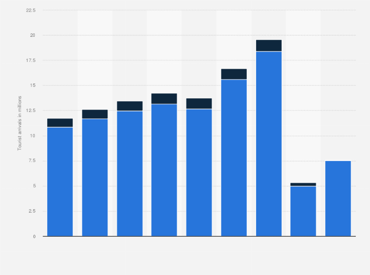

The State recorded a 1.4% increase in domestic tourist arrivals in the first three quarters of the 2022 when compared to the corresponding pre-pandemic period in 2019, according to the statistics compiled by the Department of Tourism. The foreign tourist arrivals continue to remain sluggish, showing that there is still a long road to complete recovery.
Kerala clocked a footfall of 1,33,80836 domestic tourists in the first nine months of 2022 against 1,31,84227 tourist arrivals during the same period in 2019. Meanwhile, the foreign tourist arrivals recorded a 74.7% drop from the peak of 8,19,975 during the first three quarters in 2019 to 2,06,852 in the first three quarters of 2022.

In the year 2021, the domestic tourists arriving to the southern state of Kerala accounted for approximately seven million, while the foreign tourist arrivals accounted for over 60 thousand. Kerala is the southern-most state which is renowned for its palm-lined beaches and backwaters. It is often referred to as 'God's own country'.
A Tabular Representation of the Post and Pre Covid Timelines
|
Domestic Tourists |
Foreign Tourists |
| 2019 (First Three Quarters) |
131,842,27 |
819,975 |
| 2022 (First Three Quarters) |
133,808,36 |
206,852 |